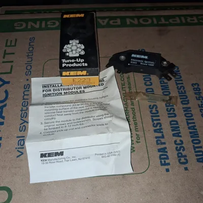
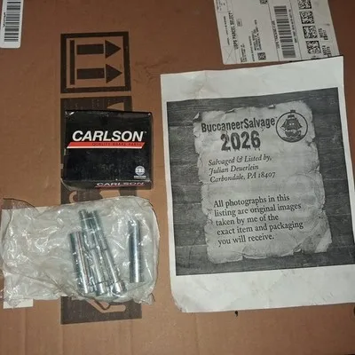
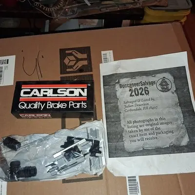
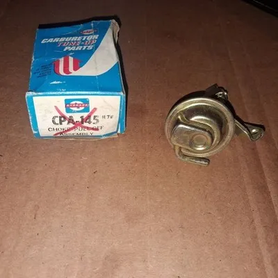
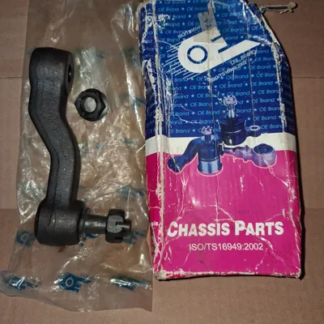
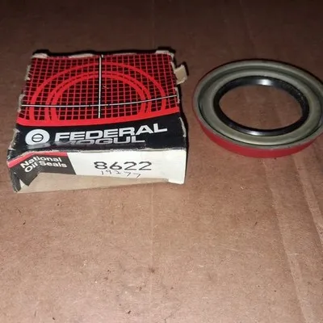
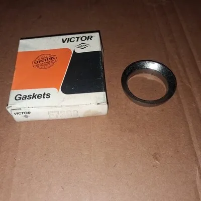

Ignition Condensers
1960-1976 KEM 84U Condenser Chevrolet Chevelle C10 Pickup GMC C15/C1500 Pickup
84U
Fits 1975-1976 GMC C15 · 1963-1966 GMC 3000 (1719 listed)
$16.99
View details118 parts whose listing names at least one GMC vehicle, mostly engine parts, ignition & tune-up and brakes & suspension. Fit depends on year, model and engine, so check the full vehicle list on each part page or message us before you buy.
118 parts
Online checkout through Square. Ships from Carbondale, PA, or pick up by confirmed appointment only. Fitment question? Message us.
84U
Fits 1975-1976 GMC C15 · 1963-1966 GMC 3000 (1719 listed)
$16.99
View details
W282X
Fits 1982-1985 GMC S15 · 1983-1984 GMC S15 Jimmy (312 listed)
$12.99
View details
W3034
Fits 1982-1985 GMC S15 · 1983-1984 GMC S15 Jimmy (230 listed)
$12.99
View details
W292X
Fits 1989-1990 GMC Tracker · 1971-1979 Toyota Corolla (453 listed)
$13.99
View details
W297X
Fits 1979-1986 GMC C1500 · 1979-1986 GMC K1500 (855 listed)
$27.91
View details
AR167
Fits 1982-1984 GMC Caballero · 1985-1990 GMC S15 (2677 listed)
$12.99
View details
AR178
Fits 1982-1984 GMC Caballero · 1985-1990 GMC S15 (2746 listed)
$15.99
View details
E220X
Fits 1982-1986 GMC C1500 · 1980-1986 GMC Caballero (1750 listed)
$25.00
View details
EG1092HD
Fits 1986 GMC C1500 · 1986 GMC C1500 Suburban (1904 listed)
$15.99
View details
1443X
Fits 1983-1990 GMC S15 · 1983-1988 GMC S15 Jimmy (569 listed)
$12.99
View details
E224X
Fits 1982-1990 GMC S15 · 1983-1989 GMC S15 Jimmy (713 listed)
$25.00
View details
E240
Fits 1982-1990 GMC S15 · 1983-1989 GMC S15 Jimmy (1168 listed)
$19.99
View details
1285X
Fits 1985-1990 GMC Safari · 1991-1993 GMC Sonoma (99 listed)
$14.99
View details
CV5405
Fits 1985-1996 GMC Jimmy · 1991-1996 GMC Sonoma (536 listed)
$17.99
View details
16140288
Fits 1994 GMC C1500 · 1994 GMC C1500 Suburban (356 listed)
$89.99
View details
1459
Fits 1994-2003 GMC Jimmy · 1996-2008 GMC Savana 1500 (867 listed)
$23.99
View details
Fits 1999-2002 GMC Sierra 1500 · 2000-2002 GMC Yukon (246 listed)
$17.99
View details
2000
Fits 2000-2006 GMC Sierra 1500 · 2000-2004 GMC Sierra 2500 (12 listed)
$60.00
View details
Fits 2007 GMC Sierra · 2003-2007 Chevrolet Silverado 1500 (207 listed)
$79.99
View details
3610-501
Fits GMC · Chevrolet
$34.99
View details
D1595G
Fits 2007 GMC Sierra · 2003-2006 GMC Yukon (89 listed)
$12.99
View details
R514
Fits 1978-1987 GMC Caballero · 1992-1997 GMC Jimmy (2492 listed)
$24.99
View details
DR-318X
Fits 1975-1986 GMC Jimmy · 1979-1984 Cadillac DeVille (707 listed)
$12.99
View details
08576
Fits 1992-1994 GMC Yukon (13 listed)
$13.99
View details
16115
Fits 2003-2013 GMC Savana 1500 · 2002-2006 GMC Yukon (881 listed)
$9.99
View details
H2148-2
Fits 1970-1994 GMC Jimmy · 1975-1986 Chevrolet C10 (1541 listed)
$9.99
View details
H2587
Fits 1992-1999 GMC C1500 · 1993-1999 GMC C1500 Suburban (89 listed)
$16.48
View details
H2591
Fits 1976-1978 GMC C15 · 1976-1978 GMC C15 Suburban (1506 listed)
$19.99
View details
H2622
Fits 1985-1987 GMC Caballero · 1992-1997 GMC Jimmy (1784 listed)
$16.99
View details
H2623
Fits 1985-1987 GMC Caballero · 1992-1997 GMC Jimmy (60 listed)
$10.99
View details
H2640
Fits 1988-1999 GMC C1500 · 1992-1999 GMC C1500 Suburban (24 listed)
$14.43
View details
H2641
Fits 1988-1999 GMC C1500 · 1992-1999 GMC C1500 Suburban (24 listed)
$18.98
View details
H2695
Fits 2009-2012 GMC Canyon · 2009-2012 Chevrolet Colorado (137 listed)
$14.99
View details
H2696
Fits 2004-2008 GMC Canyon · 2005-2008 GMC Sierra 1500 (16 listed)
$20.99
View details
H5044
Fits 1988-1993 GMC C2500 · 1992-1999 GMC C2500 Suburban (3000 listed)
$12.99
View details
H5068
Fits 2002 GMC Envoy · 2003-2005 GMC Safari (973 listed)
$12.99
View details
H5072
Fits 2003-2020 GMC Savana 2500 · 2003-2020 GMC Savana 3500 (3002 listed)
$12.99
View details
H5093
Fits 2007-2016 GMC Acadia · 2017 GMC Acadia Limited (795 listed)
$12.99
View details
H5095
Fits 2003-2005 GMC Sierra 1500 · 2006-2022 Dodge Charger (1284 listed)
$13.99
View details
H5412
Fits 1974 GMC C35/C3500 Pickup · 1991-2000 GMC C3500HD (3000 listed)
$12.99
View details
H5412
Fits 1990-1992 GMC C3500 · 1987-1992 GMC G3500 (3000 listed)
$8.99
View details
H5416
Fits 1978-1987 GMC Caballero · 1992-1997 GMC Jimmy (3000 listed)
$6.99
View details
H5539
Fits 1971-1974 GMC C15/C1500 Pickup · 1971-1974 GMC C15/C1500 Suburban (3000 listed)
$19.99
View details
H5585
Fits 1988-1993 GMC C2500 · 1992-1999 GMC C2500 Suburban (3000 listed)
$17.99
View details
H5636
Fits 1997-2005 GMC Jimmy · 1997-2004 GMC Sonoma (12 listed)
$23.99
View details
H5637Q
Fits 1997-2005 GMC Jimmy · 1998-2004 GMC Sonoma (12 listed)
$16.48
View details
H5659Q
Fits 2003-2007 GMC Sierra 1500 · 2007 GMC Sierra 1500 Classic (544 listed)
$15.99
View details
H5667Q
Fits 2002-2005 GMC Envoy · 2002-2005 GMC Envoy XL (19 listed)
$18.48
View details
H5669Q
Fits 2007-2016 GMC Acadia · 2017 GMC Acadia Limited (335 listed)
$14.99
View details
H5750Q
Fits 2003-2020 GMC Savana 2500 · 2003-2020 GMC Savana 3500 (10 listed)
$12.99
View details
H5764Q
Fits GMC Sierra · 2003-2004 GMC Sierra 1500 (226 listed)
$19.98
View details
H7330
Fits 2003-2007 GMC Savana 3500 · 2001-2006 GMC Sierra 3500 (14 listed)
$15.99
View details
H9457
Fits 1978 GMC Caballero · 1971-1977 GMC Sprint (2951 listed)
$9.99
View details
21955
Fits 1979-1997 GMC C3500 · 1979-1994 GMC K3500 (2090 listed)
$16.99
View details
TOS 18663
Fits 1992-1994 GMC Yukon · 1987-1993 Chevrolet Suburban (17 listed)
$18.99
View details
38623
Fits 1996-2014 GMC Savana 1500 · 1977-1996 Cadillac Eldorado (1484 listed)
$11.99
View details
31521
Fits 1980-1991 GMC B6000 · 1993-2000 GMC B7 (2752 listed)
$9.99
View details
33189
Fits 1985-1986 GMC S15 · 1985-1986 GMC S15 Jimmy (510 listed)
$16.95
View details
33258
Fits 1982-1989 GMC S15 · 1983-1989 GMC S15 Jimmy (1572 listed)
$17.98
View details
33779
Fits 1989-1991 GMC Tracker · 1979-1982 Ford Courier (794 listed)
$9.99
View details
12570696
Fits 2009-2013 GMC Sierra 1500 · 2009-2013 Chevrolet Silverado 1500 (121 listed)
$49.99
View details
12618735
Fits 2008-2014 GMC Savana 1500 · 2007-2013 GMC Sierra 1500 (97 listed)
$37.99
View details
15710047
Fits 1995-1997 GMC Sonoma · 1995-1997 Chevrolet S10 (74 listed)
$29.99
View details
Casting 317
Fits 2001-2007 GMC Sierra 1500 · 2001-2006 GMC Yukon (121 listed)
$199.99
View details
332724
Fits 1979-1983 GMC C1500 · 1979-1983 GMC C2500 (1562 listed)
$24.99
View details
Genuine GM
Fits 2003-2007 GMC Sierra 1500 · 2003-2004 GMC Sierra 2500 (442 listed)
$19.99
View details
12554769
Fits 1991-2000 GMC C2500 · 1992-1999 GMC C2500 Suburban (1122 listed)
$79.99
View details
CPA-145
Fits 1978-1984 GMC Caballero · 1975-1984 GMC Jimmy (1558 listed)
$19.99
View details
CPA236
Fits 1979-1984 GMC Caballero · 1975-1984 Buick LeSabre (1042 listed)
$19.99
View details
CV319
Fits 1983-1986 GMC Jimmy · 1986-1989 GMC P3500 (108 listed)
$14.99
View details
D1918
Fits 1981-1986 GMC C1500 · 1978-1981 Buick Regal (305 listed)
$60.99
View details
Fits 1974-1995 GMC · 1974-1995 Chevrolet (8 listed)
$14.99
View details
D433HP
Fits 1974-1995 GMC · 1974-1995 Chevrolet (8 listed)
$14.99
View details
V188
Fits 1978-1987 GMC Caballero · 1985-1995 GMC G1500 (2267 listed)
$9.99
View details
PV184
Fits 1992-1995 GMC Yukon · 1988-1995 Chevrolet C1500 (467 listed)
$9.99
View details
Fits 2007 GMC Sierra · 1999-2007 GMC Sierra 1500 (1563 listed)
$29.99
View details
342G
Fits 1985-1987 GMC Caballero · 1987-1995 GMC G1500 (1941 listed)
$24.99
View details
AR228
Fits 1987-1995 GMC Jimmy · 1985-1994 GMC G2500 (641 listed)
$17.98
View details
AR251
Fits 1988-1994 GMC Jimmy · 1988 GMC V1500 Suburban (3000 listed)
$14.99
View details
DS118
Fits 1978-1987 GMC Caballero · 1982-1988 GMC S15 (3000 listed)
$28.46
View details
780067
Fits 1985-1990 GMC S15 · 1985-1989 GMC S15 Jimmy (418 listed)
$49.99
View details
471271
Fits 1980-1995 GMC C1500 · 1980-1995 GMC C1500 Suburban (1528 listed)
$9.99
View details
Timken 4762N
Fits 1999-2018 GMC Sierra 1500 · 2002-2018 Cadillac Escalade (1785 listed)
$8.99
View details
8622
Fits 1980-1991 GMC C1500 · 1980-1991 GMC G1500 (1539 listed)
$14.99
View details
8871
Fits 1975-1978 GMC C15 · 1975-1986 Chevrolet C10 (1374 listed)
$8.99
View details
2-3011
Fits 1988-1999 GMC C1500 · 1999-2016 GMC Sierra 1500 (1839 listed)
$24.99
View details
Fits 1993-1998 GMC C1500 · 1993-1999 GMC C1500 Suburban (1547 listed)
$34.99
View details
PT285
Fits 1979-1986 GMC C1500 · 1975-1985 Buick LeSabre (2027 listed)
$34.99
View details
62487
Fits 2000-2019 GMC Yukon · 2002-2019 Cadillac Escalade (467 listed)
$14.99
View details
66-1191
Fits 1989-1991 GMC Tracker · 1988-1991 Honda CRX (401 listed)
$24.99
View details
220-1025
Fits 1994-1997 GMC Sonoma · 1993-1996 Buick Century (117 listed)
$29.99
View details
DR-320
Fits 1991-1993 GMC Sonoma · 1982-1986 Buick Century (402 listed)
$9.99
View details
DR-323
Fits 1988-1995 GMC C1500 · 1988-1992 GMC C2500 (841 listed)
$12.99
View details
DR-325
Fits 1985-1988 GMC Safari · 1985-1986 Buick Century (503 listed)
$12.50
View details
DR318
Fits 1975-1986 GMC Jimmy · 1979-1984 Cadillac DeVille (707 listed)
$11.99
View details
JH-72
Fits 1989-1990 GMC Tracker · 1978-1987 Subaru Brat (155 listed)
$14.99
View details
LX-339
Fits 1992-1996 GMC P6000 · 1992-1996 GMC P6500 (250 listed)
$37.99
View details
DR-39
Fits 1994-2003 GMC Sonoma · 1986-2005 Buick Century (2075 listed)
$29.99
View details
JR72
Fits 1982-1985 GMC S15 · 1983-1984 GMC S15 Jimmy (693 listed)
$9.99
View details
RX-103
Fits 1969-1974 GMC C15/C1500 Pickup · 1970-1974 Chevrolet C10 Pickup (667 listed)
$12.99
View details
TX3
Fits 1999-2013 GMC Sierra 1500 · 1996-2014 Chevrolet Express 1500 (1134 listed)
$24.29
View details
PS-129
Fits 1978-1987 GMC Caballero · 1978-1985 Buick Century (2333 listed)
$13.99
View details
PS-155
Fits 1987-1990 GMC C6000 · 1977-1985 Buick Century (1002 listed)
$19.99
View details
PS-241
Fits 1985-1988 GMC Safari · 1985-1988 Buick Century (857 listed)
$49.99
View details
RY-27
Fits 1985-1986 GMC C1500 Suburban · 1992-1994 GMC Jimmy (917 listed)
$12.99
View details
TS76
Fits 1979-1986 GMC C1500 · 1992-1994 GMC Yukon (1385 listed)
$16.99
View details
V254
Fits 1994-2002 GMC Sonoma · 1993-1996 Buick Century (262 listed)
$9.99
View details
Fits 1999-2007 GMC Sierra 1500 (231 listed)
$79.99
View details
F7139
Fits 1990 GMC C6000 · 1990 Chevrolet C60 (5 listed)
$14.99
View details
F7271
Fits 1982-1990 GMC S15 · 1991-1995 GMC Sonoma (253 listed)
$14.99
View details
F7398
Fits 1985-1990 GMC Safari · 1991-1993 GMC Sonoma (309 listed)
$10.99
View details
F106342
Fits 1978-1987 GMC Caballero · 1978-1981 Buick Century (1561 listed)
$14.99
View details
F106886
Fits 1979-1987 GMC Caballero · 1979-1981 Buick Century (1247 listed)
$14.99
View details
F109093
Fits 1984-1990 GMC S15 · 1984-1991 GMC S15 Jimmy (473 listed)
$15.99
View details
F109138
Fits 1983-1984 GMC C6000 · 1983-1984 Chevrolet C50 (34 listed)
$16.99
View details
F110260
Fits 1978-1987 GMC Caballero · 1983-1990 GMC S15 (1974 listed)
$14.99
View details
MC101254
Fits 1973-1974 GMC C15/C1500 Pickup · 1973-1974 GMC C15/C1500 Suburban (3000 listed)
$99.99
View details
51522
Fits 2004-2012 GMC Canyon · 2002-2009 GMC Envoy (28 listed)
$15.99
View details